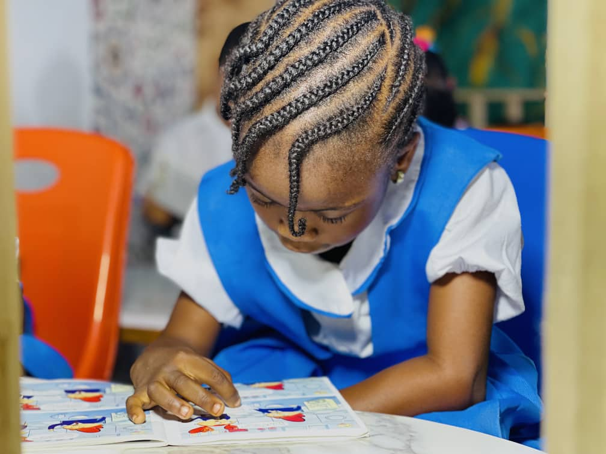
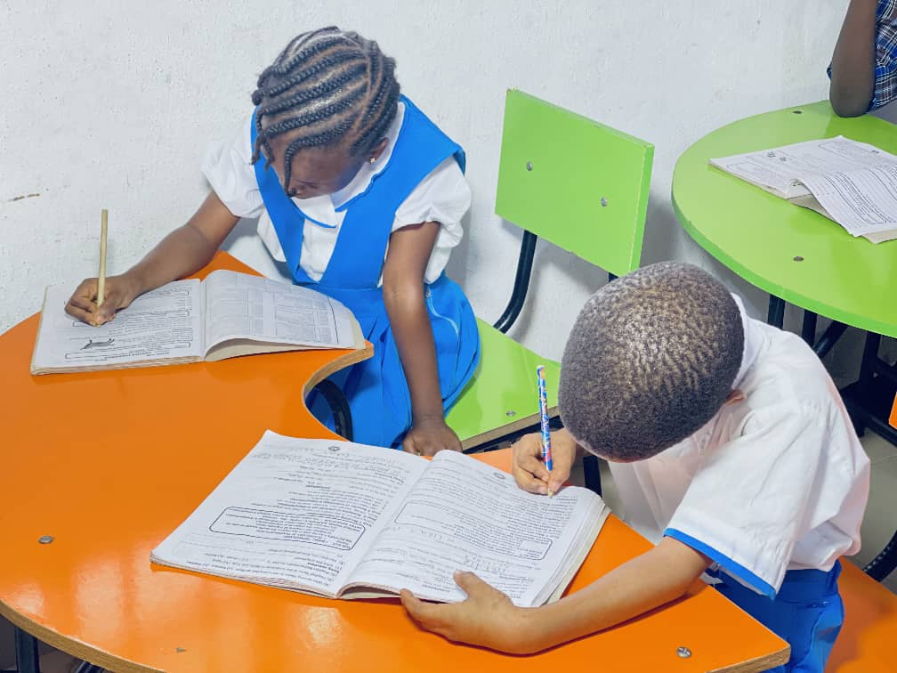
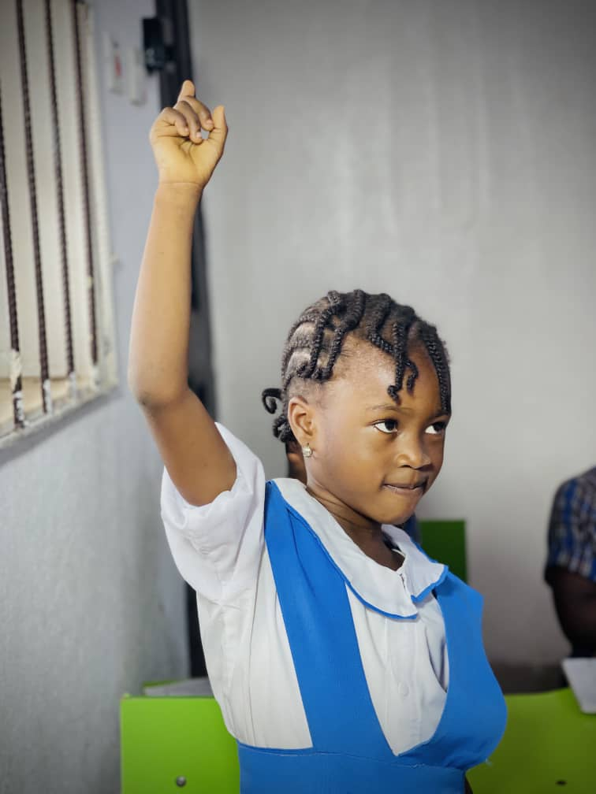
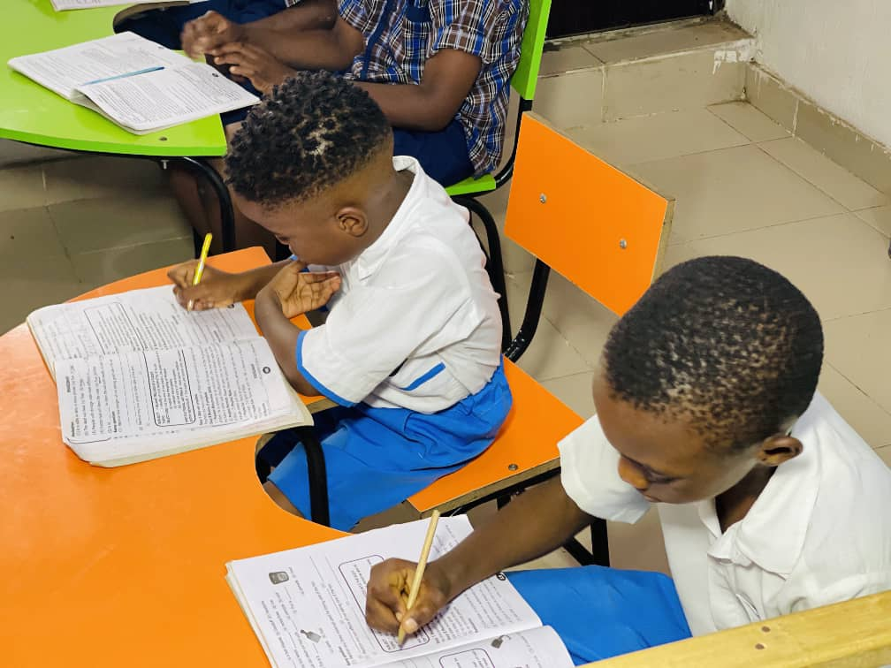
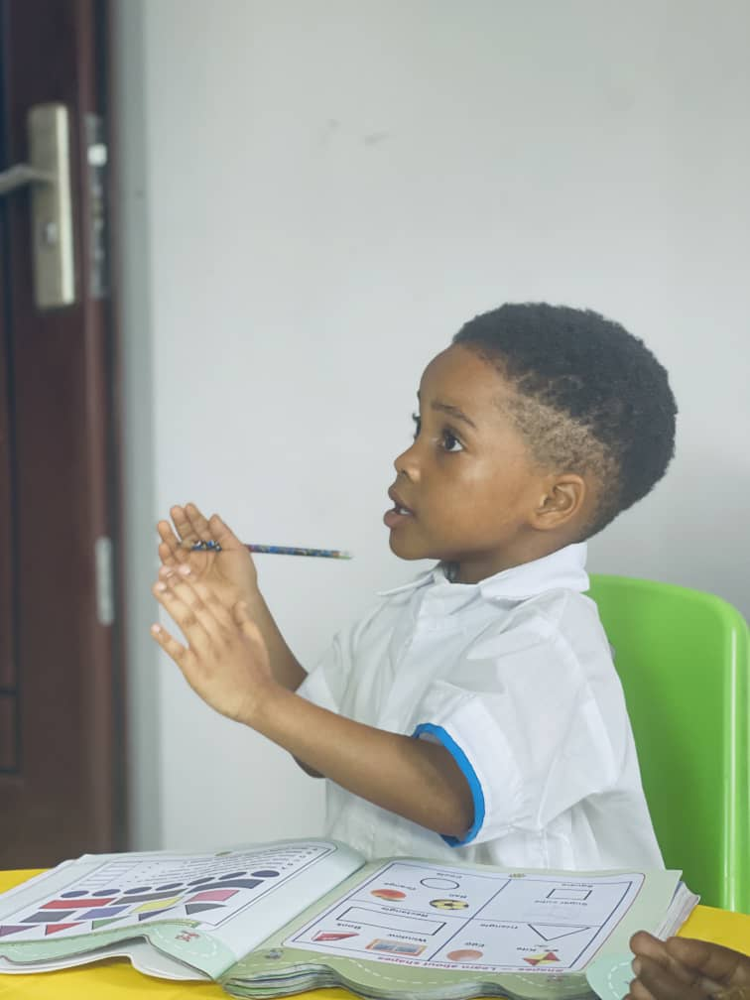
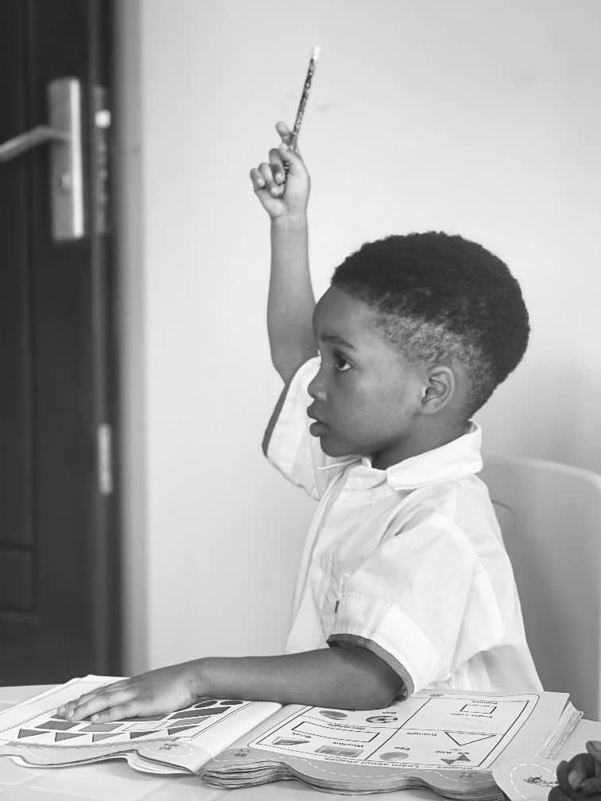
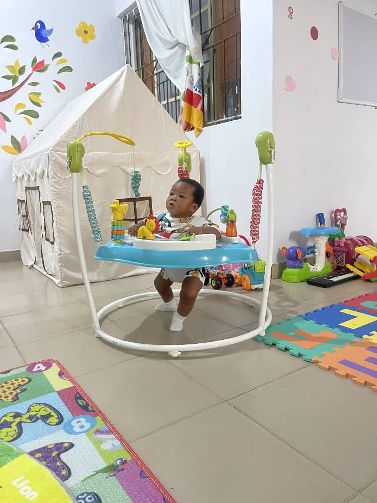
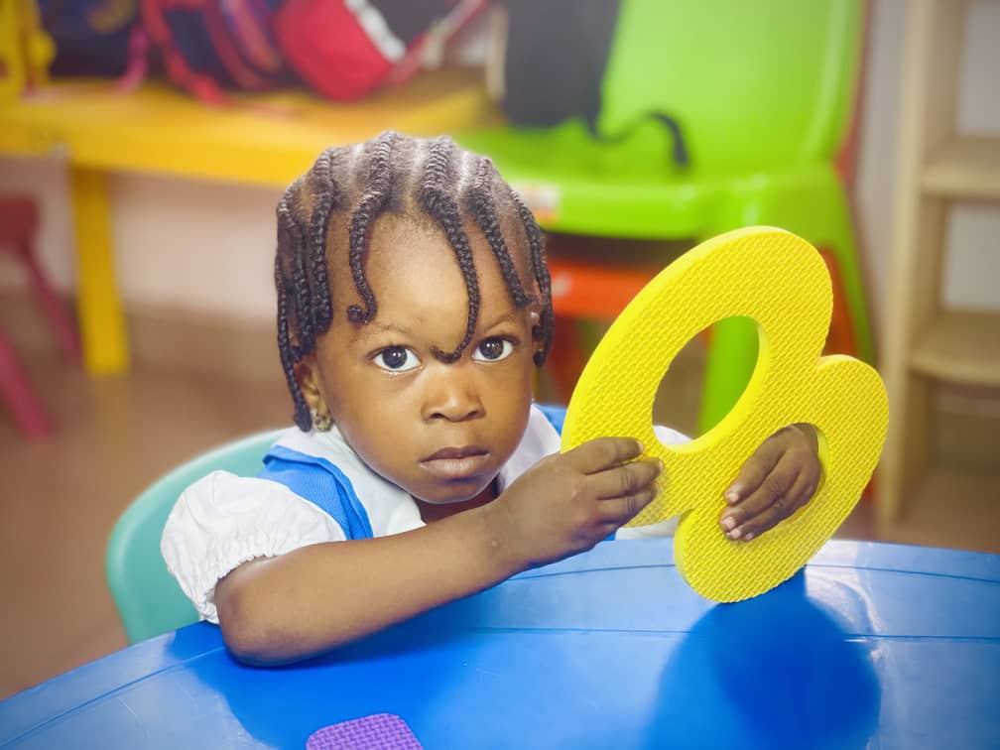
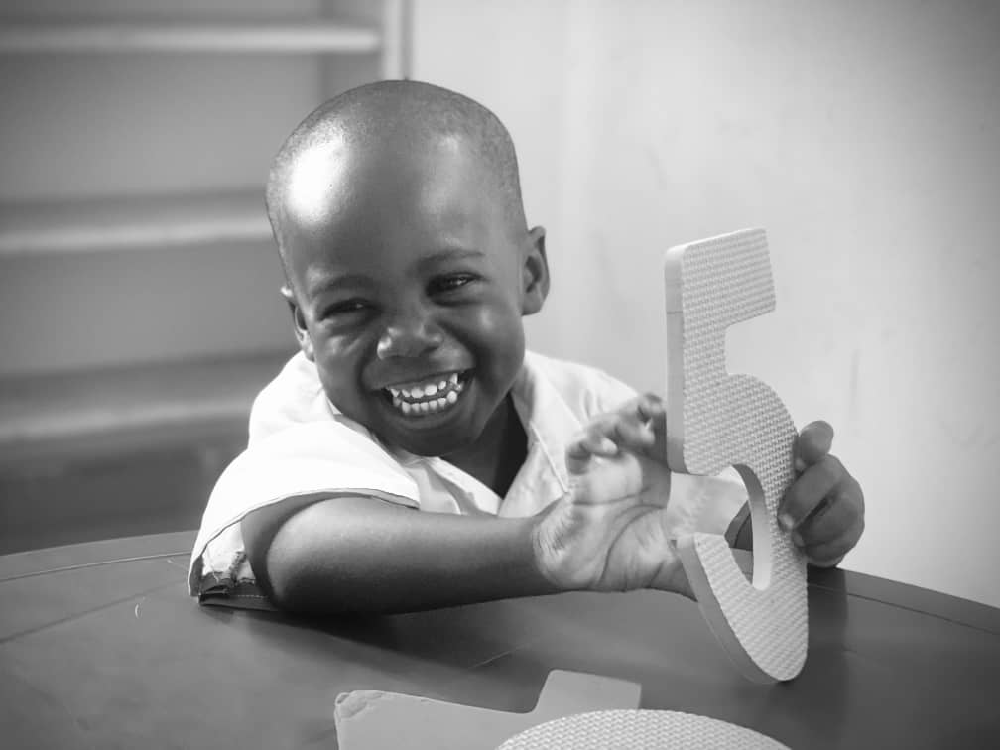
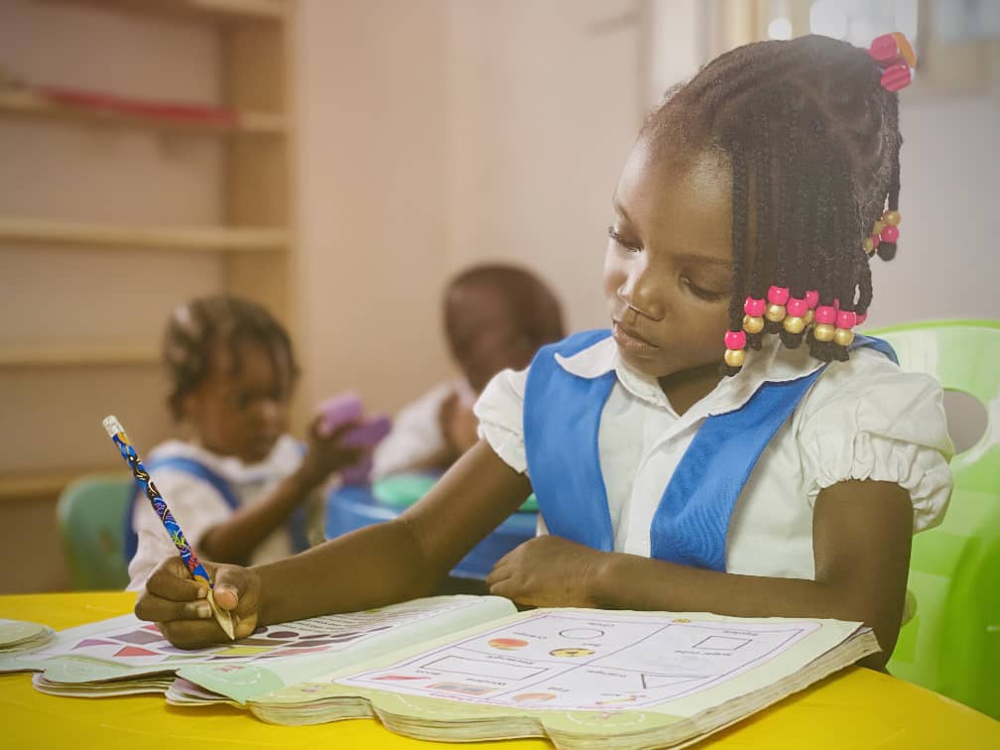

Care & belongingA supportive place to learn and feel valued.
Welcome to Laff British Montessori School
A bright beginning.A confident future.
We bring care, active learning and character development together in a school community where every child is encouraged to explore, grow and discover what they can become.
Care for every childLearning with purposeCharacter that lasts

Curiosity begins hereLearning by doing.
Growing with confidence.Practical experiences for curious young minds.
Growing with confidence.Practical experiences for curious young minds.

Every child can growAt their pace, with guidance and care.
Active learningHands-on activities that invite discovery.
Growing independenceConfidence, responsibility and good habits.
Positive characterRespect, kindness and integrity every day.

✦
A thoughtful start mattersCare and learning work best together.
A little about us
A place where children learn, belong and grow.
Laff British Montessori School supports children as they build strong foundations, discover new ideas and develop the confidence to participate. Our approach values academic learning alongside practical skills, wellbeing and good character.
Meaningful everyday learning
Opportunities to ask questions, practise skills and understand the world through experiences.
Care that recognises each child
Encouragement and supportive routines that help children feel ready to learn.
Character alongside academics
Respect, responsibility, curiosity and independence are part of the learning journey.
Our learning journey
Support for every stage.
As children grow, their learning evolves. We encourage progress through age-appropriate experiences, strong foundations and opportunities to build independence.
Early Years
Play Group – KGEarly literacy, numeracy, language, movement and practical activities that invite children to explore.
Primary 1 – 3
Building foundationsStrengthening core skills, communication, problem-solving and positive habits for learning.
Primary 4 – 6
Growing independenceDeveloping understanding, responsibility, study routines and readiness for future challenges.
Beyond the classroom
Creativity & discoverySpace for creativity, movement, collaboration and the discovery of personal interests.
Life at Laff BritishSmall moments.
Small moments.
Meaningful growth.
From focused workbook practice to shared classroom experiences, school life gives children many ways to take part, explore and build confidence.
Explore the gallery




What guides us
Values children can carry with them.
Education is about knowledge and the person a child becomes. We nurture the habits of respect, integrity, compassion and curiosity through daily learning and relationships.
Respect
Valuing ourselves, classmates, educators and our community.
Integrity
Practising honesty, responsibility and doing what is right.
Excellence
Giving our best and growing step by step.
Compassion
Showing kindness and support for others.
Curiosity
Asking questions, exploring ideas and welcoming discovery.
Independence
Building confidence and taking responsibility for learning.
Stay connected
Keep up with school life.
Explore more of the Laff British Montessori School community through our public pages.
School community
Explore school life
See classroom activities, moments of discovery and the everyday learning experience.
Visit the gallery →
News & updates
What’s happening
Read the latest public school stories, updates and community highlights.
Read school news →
For families
Check a student result
Go to the secure result page to check a published student report.
Check result →